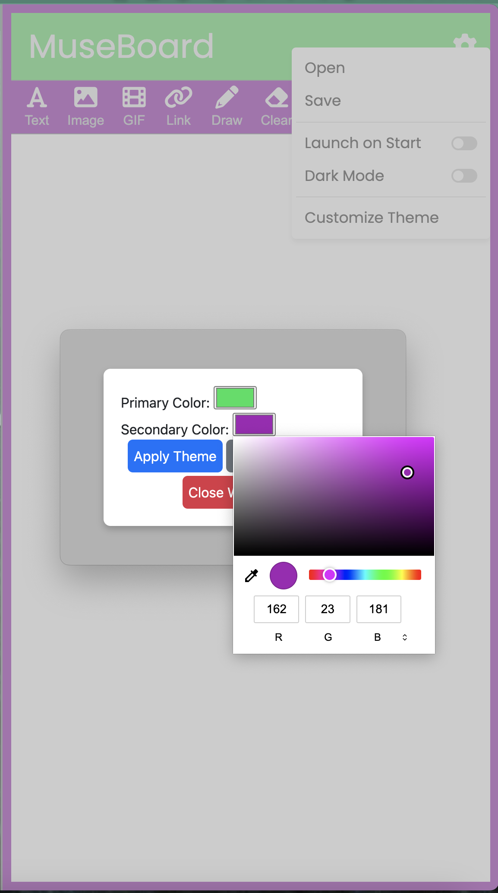
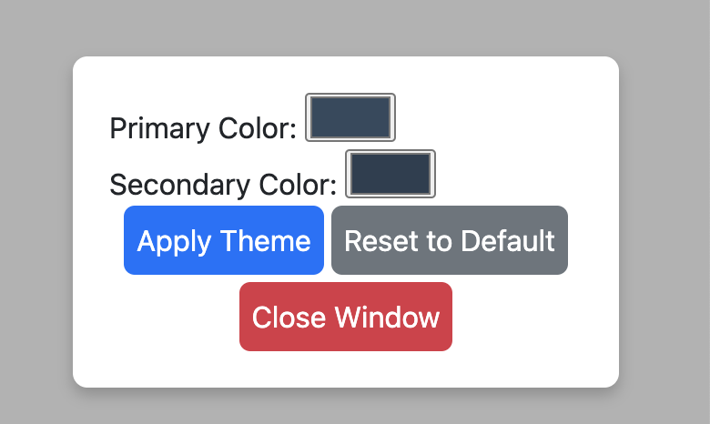
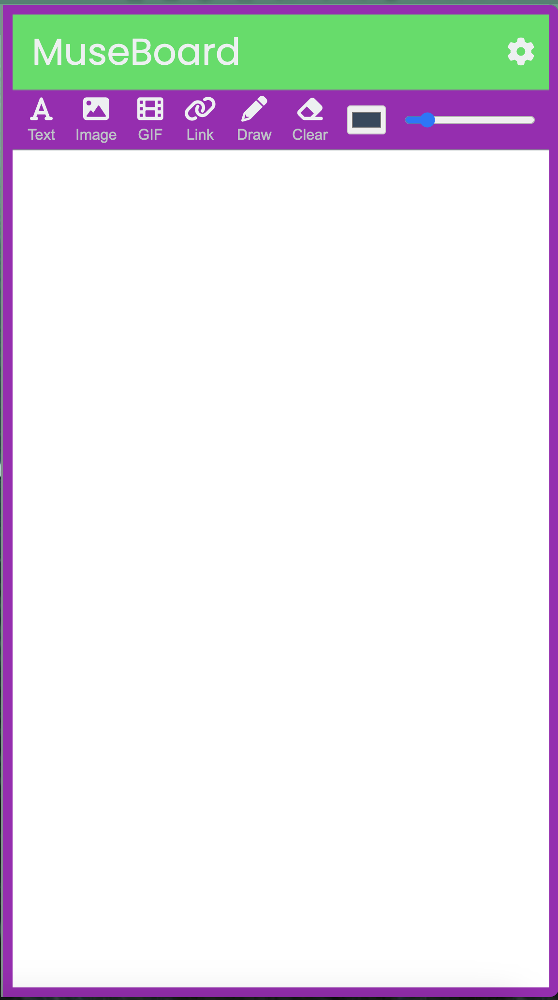

Text: Click the Text button to add an editable text box.
Media: Click the Media button to insert images or GIFs from your computer.
Link: Click the Link button to add a clickable URL; enter your address and optional display text. Once placed on the canvas, hover over the link to reveal edit and delete controls—click edit to edit or delete icon to remove it.
Draw: Click the Draw button to start freehand drawing. Double‑click it to open options—pick your tool (pen, pencil, highlighter, brush), color, and thickness.
Erase & Undo: Click the Clear (eraser) button to toggle erase mode and click any element or stroke to delete it. Click the Undo button to revert your last action.
Resize Panel: Use the vertical bar icon at the top of the sidebar to adjust its width—click and drag left or right.
Resize Canvas: Hover over any window edge or corner until the resize cursor appears, then click and drag to resize the entire window and canvas. Use the system maximize/restore button in the title bar for full-width or previous size.
Settings & Themes: Click the gear icon to open settings: – Open / Save boards – Toggle “Launch on Start” or “Dark Mode” – Customize each tool’s default color & thickness



Keyboard Shortcuts: Esc – Close any open modal Ctrl+T – Add Text Ctrl+M – Add Media Ctrl+L – Add Link Ctrl+D – Toggle Draw mode Ctrl+E – Toggle Erase mode Ctrl+Z / ⌘+Z – Undo last action